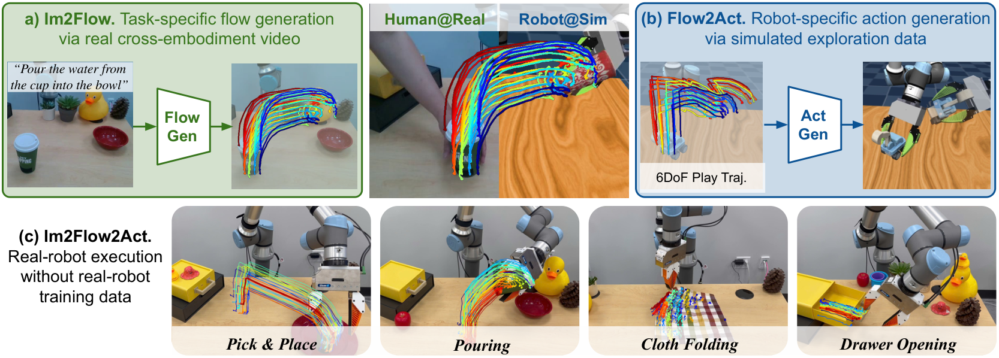
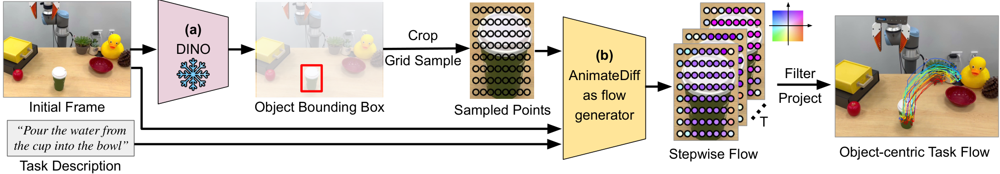
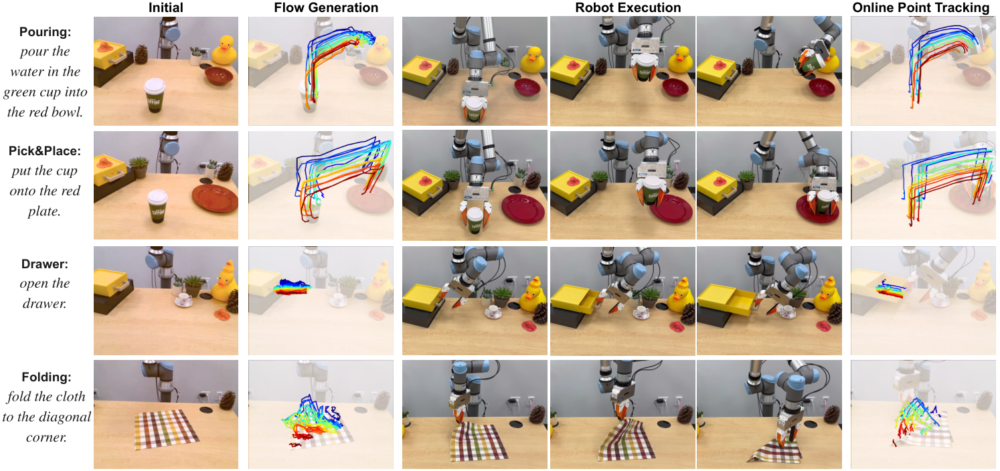
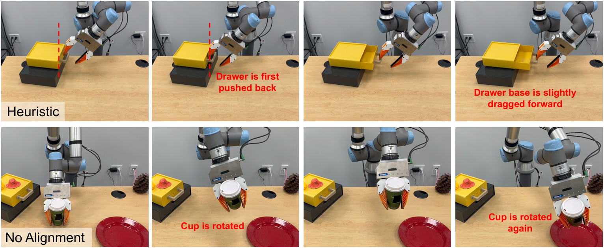
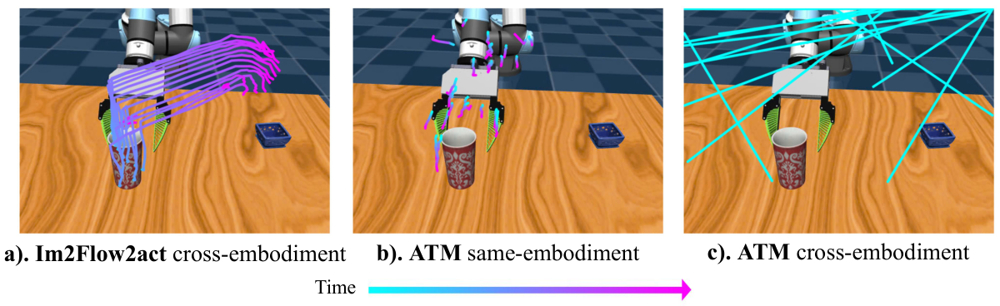
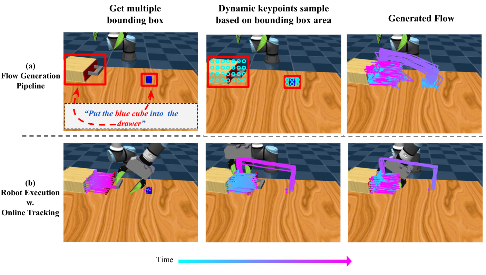
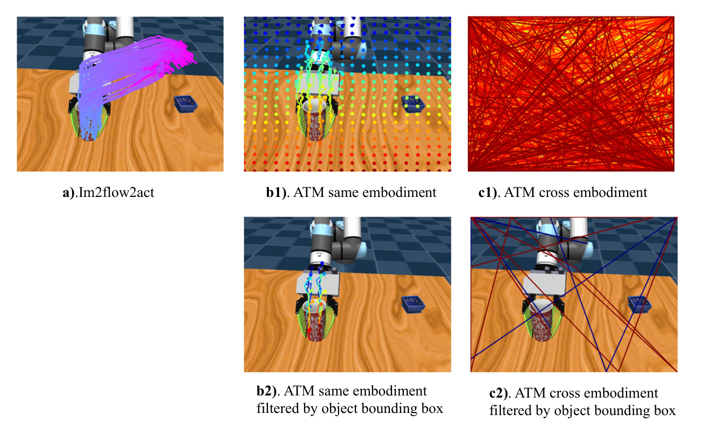
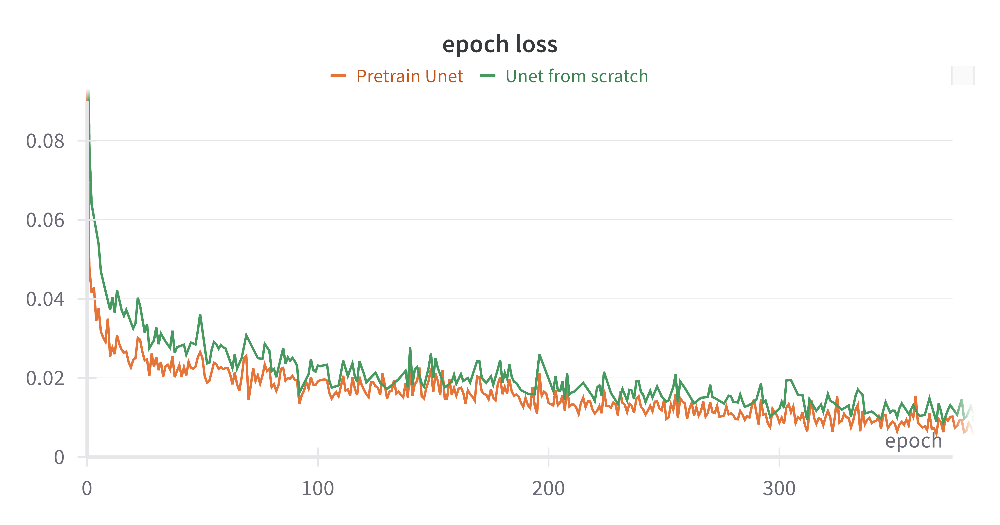
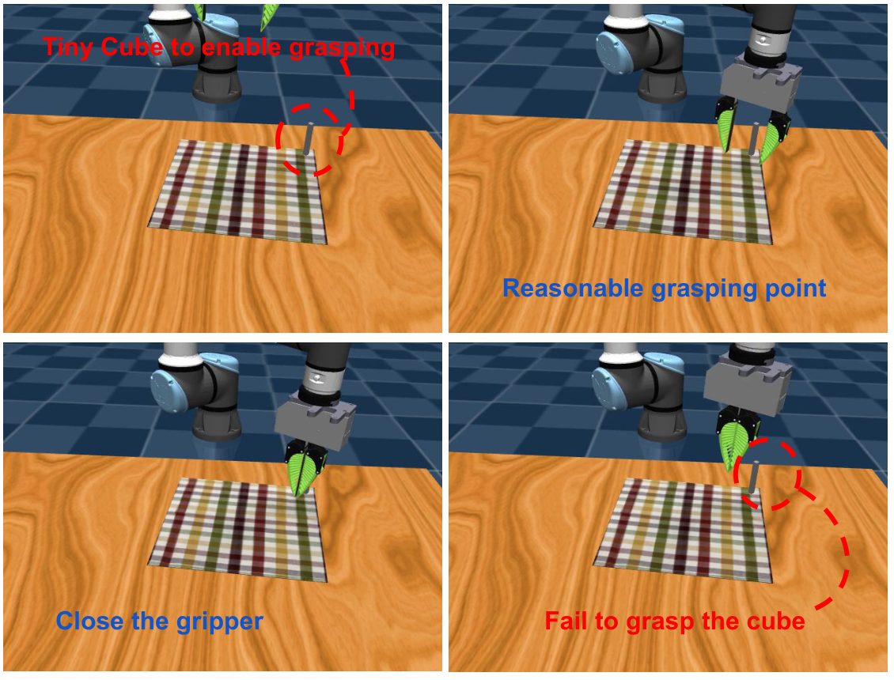
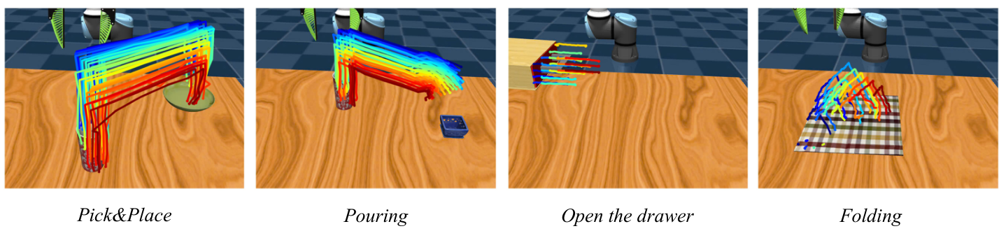

Flow as the Cross-Domain Manipulation Interface
1. Quick overview of the paper
| Reading targeting item | content |
|---|---|
| What should the paper solve? | Real robot teleoperation data is expensive, and the human hand video and robot action space are very different; the author wants the robot to learn real operation skills from real human demonstration videos and simulation exploration data without real robot training data. |
| The author's approach | Use object flow as a cross-embodiment, cross-environment interface. The flow generation network generates a complete task flow from the initial image and task description; the flow-conditioned imitation policy outputs the robot end action based on the task flow, current keypoint tracking and proprioception. |
| most important results | The real-world four-task language-conditioned success rate is Pick&Place 90%, Pouring 80%, Drawer 85%, and Cloth 70%, with an average of about 81%; the simulated language-conditioned success rate is 90%, 85%, 90%, and 35%; the long-horizon multi-object task reaches 85%. |
| Things to note when reading | The method relies on 2D flow, Grounding DINO, SAM/motion/depth filters, TAPIR online point tracking and camera perspective calibration; 2D flow has ambiguity for 3D actions, and cloth is only 35% in the language-conditioned simulation, which is the boundary that should be focused on when reading experiments. |
Difficulty rating: ★★★★☆. Need to understand point tracking / object flow representation, Latent Diffusion / AnimateDiff condition generation, transformer temporal alignment, Diffusion Policy, and sim-to-real and cross-embodiment experimental design.
Core contribution list
- Object flow interface: The author uses "object movement" instead of "robot action" as the intermediate variable, explicitly excludes background and embodiment motion, and reduces the difference in human hand/robot appearance.
- Separate high-level task understanding from low-level execution: The flow generation network learns high-level task flow from cross-embodiment human videos; the flow-conditioned policy learns low-level action mapping from simulated robot exploration data.
- Deployment of real robots without real training data: The real UR5e task does not use real robot training data, relies on human hand video + simulation exploration, and is tested on rigid body, joint object, and flexible object tasks.
- Complete appendix verification: Appendix supplements the ATM comparison, long-horizon multi-object task, initial 3D keypoints ablation, Stable Diffusion pre-training ablation, realistic evaluation protocol and additional limitations.

2. Motivation
2.1 What problem should be solved?
To extend robot learning to multi-task real-life scenarios, the key difficulty is not whether there are demonstrations for a single task, but that the sources of demonstration data are incompatible with each other. Real robot data is expensive, simulation data and real appearance/contact dynamics are different, human videos have no robot motion, and the embodiment of the human hand and the UR5e gripper are completely different. The author's starting point is: If you only look at "how the manipulated object should move", then this information is easier to reuse across embodiments than joint movements or human hand trajectories.
2.2 Limitations of existing methods
- Flow-based manipulation still often requires real robot data: ATM can do articulated/deformable operations with flow-conditioned BC, but still requires real-world robot teleportation data; Track2Act / General Flow class heuristics require 3D flow, pose estimation or manual placement of contact points.
- Cross-embodiment methods are still difficult to cross action spaces: Many methods extract visual representations, rewards, affordances, or hand gestures from human videos, but in-domain robot data still needs to be collected to fill the implementation gap.
- Grid flow will capture embodiment motion: Uniform grid flow such as ATM will track the human hand, spherical agent or the robot arm itself, and a visual input out-of-distribution will appear when the UR5e gripper is deployed.
- Pure 2D representation with 3D ambiguity: 2D flow does not have sufficient details for actions such as z-axis movement, out-of-plane rotation, and screwing. This is a limitation that the author acknowledges in both the main text and the appendix.
2.3 The solution ideas of this article
Im2Flow2Act splits the system into two modules that can be trained separately. First, the flow generation network inputs the initial RGB image, task description and initial object keypoints, and outputs the complete task flow. Second, the flow-conditioned imitation policy inputs task flow, current tracked keypoints and proprioception, and outputs the end-effector action sequence of the next 16 steps. During deployment, a complete flow is generated only once at the beginning of the task. During the execution process, the remaining flows corresponding to the current progress are found through online point tracking and temporal alignment, and then the actions are output in a closed loop.
4. Detailed explanation of method
4.1 Overall pipeline
- Determine the target object: Use Grounding DINO to detect object bounding boxes based on manually given keywords. Real task keywords include "green cup", "yellow drawer", and "checker cloth" Appendix: Grounding DINO.
- Form a rectangular flow image: Sampling keypoints evenly within the object frame to form $\mathcal{F}_0\in\mathbb{R}^{3\times H\times W}$. The three channels are the $u, v$ coordinates and visibility of image-space.
- Generate complete task flow: Use TAPIR to get $\mathcal{F}_{1: T}\in\mathbb{R}^{3\times T\times H\times W}$ from human hand video to train the flow generator; when deployed, the AnimateDiff-style model generates future flows based on the initial frame and language.
- Filter object-centric flows: Motion filters, SAM filters and depth filters remove background points, points on overly large segments and points with missing depth; then $N=128$ keypoints are randomly selected as policy input Appendix: Motion Filters.
- Closed loop execution: Use TAPIR online to track the current keypoints at 5Hz; the policy aligns the remaining flow according to the current progress and outputs a 16-step action sequence.

4.2 Flow generation network
The authors' key representation choice is to organize permutation-invariant object keypoints into a structured rectangular flow image. This allows reusing the convolution and attention structures of the image/video generation model instead of directly processing unordered point sets.
Intuition: Instead of generating an RGB video, the flow generator generates "where these object points should be in the next 32 time steps."
$$ \mathcal{F}_0 \in \mathbb{R}^{3\times H\times W}, \qquad \mathcal{F}_{1: T}\in \mathbb{R}^{3\times T\times H\times W}. $$| $H=W=32$ | The flow image spatial resolution given in the appendix training details corresponds to 1024 keypoints. |
| $T=32$ | The number of time steps for flow generation network and task flow horizon. |
| 3 channels | $u$ coordinates, $v$ coordinates, and visibility of each keypoint. |
| $E_\phi, D_\theta$ | Stable Diffusion autoencoder's encoder/decoder; the encoder is fixed and the decoder is fine-tune to adapt to flow images. |
In order to reduce the cost of high-resolution flow generation, the author compresses the flow image into the latent space of Stable Diffusion: $x_{1: T}=\{E_\phi(\mathcal{F}_i)\mid i\in[1, T]\}$, and the spatial dimension is downsampled 8 times compared to the input flow. When training AnimateDiff, insert LoRA with rank=128 into Stable Diffusion U-Net and train the motion module from scratch.
4.3 Flow-conditioned imitation policy
The conditional probability of policy is written as:
Action $a_t$ contains 6-DoF end-effector Cartesian pose and 1-DoF gripper open/close. $s_t$ is encoded by the current tracked keypoint image locations $f_t$ and the initial 3D coordinates $x_0$. $\rho_t$ is the robot proprioception.
policy contains three modules:
| module | input/output | function |
|---|---|---|
| State encoder $\phi$ | Input $N=128$ current 2D keypoints and corresponding initial 3D coordinates; output 384-d state representation. | Compress the current object state into a permutation-invariant representation. Implemented as 4-layer transformer encoder + CLS token Appendix: Policy training. |
| Temporal alignment $\psi$ | Input the complete task flow, current state, proprioception; output the latent $z_t$ of the remaining task flow. | Estimate the current execution progress to avoid that the policy is always conditioned on the complete flow; it is also a key module that supports demonstration-conditioned execution. |
| Diffusion action head | Input $z_t, s_t, \rho_t$; output action sequence. | Using Diffusion Policy, DDIM scheduler, 50 training diffusion steps, 16 inference steps. |
Why is Temporal alignment necessary?
The training data comes from unstructured simulated exploration. The complete task flow only describes the target movement from the starting point to the end point, but after the policy is executed halfway, you need to know "which flow segments are left unfinished". Therefore, the author first uses encoder $\xi$ to encode the ground-truth remaining flow $f_{t: T'}$ into the supervision target $\hat{z}_t$, then trains $\psi(\mathcal{F}_{0: T}, s_t, \rho_t)$ to predict $z_t$, and uses $L_2$ loss $\|\hat{z}_t-z_t\|^2$ for supervision. Both the main article and real experiments show that the execution will be less smooth after alignment is removed, and the decrease in real Pick&Place and Pouring is particularly obvious.
4.4 Implementation points
5. Experiment
5.1 Experimental setup
The authors evaluate 4 categories of tasks: Pick&Place, Pouring, Drawer Opening, Cloth Folding, covering rigid bodies, joint objects, and flexible objects. The training data is divided into two parts: robot exploration data collected using UR5e and predefined random heuristic primitives in simulation; human demonstration videos collected for each task in the real world for training flow generation model. The evaluation includes both demonstration-conditioned execution and language-conditioned execution modes.
| Assessment mode | meaning | What problem does it isolate? |
|---|---|---|
| Demonstration-conditioned execution | The policy uses a single human demonstration video or a simulated spherical agent demonstration to extract the object flow. | It mainly tests whether the low-level flow-to-action policy can follow the given flow and try to eliminate flow generation errors. |
| Language-conditioned execution | The complete system first generates a flow based on the task description and initial image, and then uses the policy to execute the action. | Test the end-to-end capabilities of flow generator + policy. |
5.2 Baselines
| Baseline | design purpose | Fairness/Additional Information |
|---|---|---|
| ATM | Closed-loop grid flow generation only predicts the immediate next few steps. | Test whether full object-centric task flow is more suitable for cross-embodiment than grid flow. |
| Heuristic | Select the contact point and use RANSAC / pose estimation to push the motion from the future object flow. | The author gives it ground-truth 3D flows and optimal grasp pose; used to test whether the learned policy is necessary. |
| GridFlow | Replace Im2Flow2Act's object keypoints with uniform grid keypoints. | Examine the effect of object-centric keypoint sampling. |
| No alignment | Remove temporal alignment model $\psi$ and complete task flow conditions. | Check whether alignment helps find the action corresponding to the current progress from unstructured exploration data. |

5.3 Simulation results
| method | Demonstration-conditioned | Language-conditioned | ||||||
|---|---|---|---|---|---|---|---|---|
| Pick&Place | Pouring | Drawer | Cloth | Pick&Place | Pouring | Drawer | Cloth | |
| Im2Flow2Act | 100 | 95 | 95 | 90 | 90 | 85 | 90 | 35 |
| ATM | / | / | / | / | 50 | 30 | 85 | 30 |
| Heuristic | 70 | 50 | 30 | 0 | / | / | / | / |
| GridFlow | 30 | 25 | 35 | 45 | / | / | / | / |
| No alignment | 80 | 85 | 90 | 90 | / | / | / | / |
The author's interpretation is: object flow can connect different data sources; although Heuristic has ground-truth 3D flows and optimal grasp pose, it can still work on tasks rigid, but fails obviously on drawer / cloth, indicating that flow-to-action requires a learning policy; GridFlow is significantly lower than object flow, indicating that it is critical to exclude embodiment/background motion.
5.4 Real-world results
| method | Demonstration-conditioned | Language-conditioned | ||||||
|---|---|---|---|---|---|---|---|---|
| Pick&Place | Pouring | Drawer | Cloth | Pick&Place | Pouring | Drawer | Cloth | |
| Im2Flow2Act | 95 | 80 | 90 | 70 | 90 | 80 | 85 | 70 |
| Heuristic | 70 | 50 | 30 | 0 | / | / | / | / |
| No alignment | 55 | 0 | 80 | 60 | / | / | / | / |
The real world average success rate is about 81%. The author points out that the average drop from simulation to real is only 15%, and attributes the reason to the fact that flow pays more attention to motion rather than appearance, thus reducing the sim-to-real gap. No alignment drops significantly on real Pick&Place/Pouring, supporting the design of temporal alignment.

5.5 Appendix: ATM, long-horizon and keypoint ablation
| Appendix experiment | result | Conclusion |
|---|---|---|
| ATM comparison | In Pick&Place/Pouring/Drawer, Im2Flow2Act language-conditioned is 90/85/90; ATM cross embodiment is 50/30/85; ATM same embodiment is 90/90/95. | ATM can be strong in the same embodiment, but cross-embodiment visual input OOD; object-centric flow is more robust to UR5 appearing in the picture. |
| Long-horizon multi-object task | The task is open drawer -> pick blue cube -> place into drawer -> close drawer. Im2Flow2Act demonstration-conditioned 90%, language-conditioned 85%; ATM language-conditioned 45%. | Complete task flow + temporal subsampling can compress long-term multi-object tasks. |
| Initial 3D keypoints | Demo-conditioned without 3D is 100/90/90, full is 100/95/95; language-conditioned without 3D is 85/85/80, full is 90/85/90. | Initial 3D keypoints are helpful for identifying noisy keypoints under generated flow input, especially drawer handle positions. |



5.6 Appendix: Pre-training, simulation flow and deformable failure
| experiment | Numerical value/phenomenon | explain |
|---|---|---|
| Stable Diffusion pre-training ablation | Pretrain U-Net: 90/85/90/35; U-Net from scratch: 90/90/95/30. | Pretraining has less impact on the final success rate, but LoRA + pretrained SD provides training efficiency; AE latent space may still help diffusion learning. |
| Generated flow in simulation | In the simulation, a spherical agent is used instead of UR5 to collect cross-embodiment demonstrations, and a motion filter is used to visualize the high-variance flow. | Verify that the flow generator not only works on real human hand videos, but also learns from simulated cross-embodiment demonstrations. |
| Deformable failure | In the cloth folding simulation, in order to allow the robot to grasp cloth, small squares of 1cm x 1cm x 9cm are attached to the corners of the cloth; the policy can often reach the corners but cannot accurately grasp the small squares. | Explain that the simulated cloth language-conditioned is only 35%; in reality, it can be grabbed anywhere along the corners of the cloth, so the success rate is more reasonable. |



6. Summary of recurrence information
6.1 Data collection
| data source | How to collect/use |
|---|---|
| Simulated exploration data | Use UR5e and a set of predefined random heuristic primitives in simulations, covering rigid, articulated, and deformable objects. Train a multi-task flow-conditioned policy. |
| Real-world human demonstrations | Four tasks: pick & place, pouring, opening drawer, folding cloth. RealSense 30 FPS recording, training flow generation model. |
| Simulation cross-embodiment demos | Use sphere agent to simulate human demonstrations, collected using the same primitive; long-horizon task collects 150 sphere trajectories and 100 UR5 demonstrations. |
6.2 Authentic Assessment Protocol
- Initial state: During real evaluation, the background does not exactly match the human demonstration video and is used to test the generalization of the flow generator; the initial position of the object roughly obeys the distribution in the human demonstration.
- Pick&Place: The cup is placed firmly on the red plate, and the red plate does not move more than 5cm.
- Pouring: The cup rotates more than 30 degrees and performs a complete pouring action, and at least half of the cup overlaps the red bowl in the world x-axis direction.
- Drawer Opening: When the drawer is fully opened, the clamping claws cannot hit the drawer surface severely and the drawer cannot be pushed back more than 5cm.
- Cloth Folding: Press the generate flow to fold the cloth. After completion, the distance between the two corners is lower than the threshold; due to the deformable sim-to-real gap, the threshold is set to 7cm.
6.3 Key hyperparameters
| module | Configuration |
|---|---|
| Flow image | $H=W=32$, $T=32$, 1024 keypoints, 3 channels: $u, v, visibility$. |
| Flow generator | Stable Diffusion AE encoder is fixed; decoder fine-tune 400 epochs, lr $5e-5$; AnimateDiff U-Net inserts LoRA rank 128; motion module is trained from scratch 4000 epochs, lr $1e-4$, AdamW weight decay $1e-2$. |
| CLIP conditions | CLIP text encoder for text; final ViT layer patch embeddings of CLIP image encoder for initial image; openai/clip-vit-large-patch14 weight freezing. |
| Policy sample | $(\rho_t, f_t, \mathcal{A}_{t: t+L}, F_{0: T})$; task flow horizon 32; action sequence length 16; $N=128$ keypoints are randomly selected for each sample during training. |
| State encoder | The initial 3D coordinate projection is 192-d, and the 2D keypoint location encoding is 192-d, which is spliced into a 384-d descriptor; 4-layer transformer encoder + CLS token. |
| Temporal alignment | The remaining task flow encoder $\xi$ is a 4-layer transformer; the alignment model is an 8-layer transformer; using fixed 1D sinusoidal positional encoding and CLS token. |
| Action head | Diffusion Policy; DDIM scheduler; 50 training diffusion steps, 16 inference steps; policy training 500 epochs, lr $1e-4$, AdamW weight decay $1e-2$. |
6.4 Inference perception module
| module | Configuration/Thresholds |
|---|---|
| Grounding DINO | grounding-dino-base, input 480x640; keywords: green cup, yellow drawer, checker cloth. |
| Moving filter | Remove points in 256x256 image space that move below the threshold; threshold 20 for Pick&Place/Pouring/Drawer, threshold 10 for Cloth. |
| SAM filter | The initial frame is resized to 256x256, using finest segmentation; the filter points are points whose segment area exceeds the threshold, and the threshold is 10, 000. |
| Depth filter | Remove missing depth, i.e. keypoints with a depth value of 0. |
| Online tracking | TAPIR online point tracking, visual observation resize to 256x256, 5Hz. |
tmp/arxiv_source_2407.15208/; PDF at tmp/2407.15208.pdf; The source compressed package is in tmp/arxiv_source_2407.15208.tar.gz; The report chart is in Report/2407.15208/figures/. These temporary materials have not yet been deleted to facilitate continued verification.
7. Analysis, Limitations and Boundaries
7.1 The most valuable part of this paper
According to the paper's own claims and experiments, the most valuable thing is to break down cross-domain robot learning into a relatively clear interface problem: use object flow to express task knowledge, let human demonstrations only be responsible for providing "how the object moves", and let simulation exploration only be responsible for learning "how the robot achieves this movement". This disassembly avoids migrating directly from human actions to UR5e and avoids collecting robot teleoperation for each real task.
7.2 Why the results hold up
Experimental support mainly comes from three types of controls. First, the ground-truth 3D flow obtained by the Heuristic baseline and the optimal grasp pose are still different from drawer / cloth, indicating that flow-to-action is not sufficient for simple pose estimation. Second, the decrease of GridFlow and ATM cross-embodiment indicates that "object-centric complete flow" is more suitable for cross-embodiment than grid flow containing motion embodiment. Third, No alignment drops significantly in real tasks, indicating that temporal alignment has a practical effect on implementing the policy learned from unstructured exploration data into real human flow.
7.3 Author's statement of limitations
- 3D ambiguity of 2D flow: Common failures in pouring come from the inaccurate z-axis movement of the robot camera coordinates; 2D flow is difficult to express screwing and other out-of-plane rotations. The author believes that 3D flow may alleviate this.
- Simulation vs. real object dynamics Assumptions: The framework assumes that the object dynamics of simulation and real world are relatively consistent; deformable object simulation is still difficult, resulting in significant performance differences in folding from simulation to reality.
- Viewing angle calibration assumptions: The appendix states that the system assumes that the simulation and test environment cameras are viewpoint calibrated, and that the action is visible from the camera perspective.
- Action details are abstracted away by flow: The flow abstraction ignores some action details and has limitations on dexterous tasks such as in-hand manipulation.
- Depends on object detection: Flow generation relies on accurate object detection; Grounding DINO / segmentation errors will be passed to subsequent policies.
- Task scope restrictions: The author focuses on manipulation that "changes the state of an object through interaction"; if the target state change is not reflected in the object motion, such as a touch screen button, the method may not be applicable.
7.4 Applicable boundaries
| Suitable for use cases | Not suitable or requires additional modules |
|---|---|
| Target tasks can be described by object point motion, such as pick/place, pour, open drawer, fold cloth. | The critical success factors are force, tactile, hidden state or non-visual feedback rather than visible object motion. |
| Target objects can be stably positioned by Grounding DINO/SAM/depth filtering and can be tracked online. | Scenes with severe occlusion, transparent/reflective objects, no depth or tracking easily lost. |
| Simulation can generate exploration data that sufficiently covers the action-object motion relationship. | Real contact dynamics differ greatly from simulation, especially for deformable, granular or high-precision force control tasks. |
| The camera view can see the action and target objects, and the simulated/real view can be calibrated. | Multiple viewing angles change significantly, hand-eye occlusion is strong, and actions occur in areas invisible to the camera. |